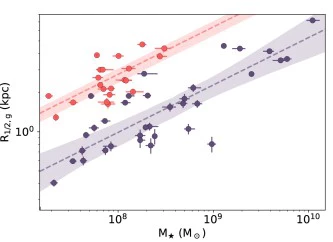

I grew up in Davis, CA, a small-ish town in the valley of California. Unlike most small towns in the middle of farmland, there is a decent chance that you (likely an academic) know of my hometown as the location of UC Davis. I moved to the East Coast in 2013 to get my bachelor's at Tufts University, where I was advised by Danilo Marchesini. In 2017, I moved down to Princeton for graduate school; my advisor was Jenny Greene. I got my PhD in 2022, after which I moved slightly north to Connecticut where I became a YCAA Prize Fellow at the Yale Center for Astronomy and Astrophysics; in 2025, I'll head back to California as a Kavli fellow at the Kavli Center for Particle Astrophysics and Cosmology (KIPAC).
Collaborations
I have the pleasure of participating in several great past and ongoing collaborative efforts.
See below for information and links to some of the surveys that I have been a part of over the years.
The Merian Survey
The Merian Survey will capture spatially-resolved emission properties for an estimated 100,000 dwarfs down to an Hα equivalent width of 10 Å and a stellar mass of 108 solar masses. Merian has two main science goals: to characterize the star formation properties of bright dwarfs, and to measure the stellar-to-halo mass relation of low-mass galaxies via weak lensing. The survey utilizes two custom-built medium-band filters on the Dark Energy Camera (DECam) centered on [OIII] and Hα emission at 0.06<z<0.10 that will cover around 800 square degrees of the HSC-SSP footprint.
The Satellites Around Galactic Analogs Survey
The SAGA survey is a recently-completed spectroscopic census of the satellite galaxies around 101 nearby Milky Way analogs. The survey identified 300+ satellites with a mass-complete sample down to stellar masses of 107.5 solar masses, elucidating the nature of our own galaxy in a cosmological context.
The Prime Focus Spectrograph Subaru Strategic Program
PFS-SSP is the upcoming strategic program survey associated with the new flagship spectrograph on the Subaru Telescope. The NIR wavelength coverage, fast fiber positioner system, and high sensitivity of the Prime Focus Spectrograph make it an optimal workhorse instrument for a broad variety of science goals: PFS-SSP has three main science working groups: Cosmology, Galaxy Evolution, and Galactic Archaeology.
The Hyper Suprime-Cam Subaru Strategic Program
HSC-SSP is the 5-year flagship survey of the Hyper Suprime-Cam imager on the 8m Subaru Telescope. It surveyed more than 1000 square degrees of the sky in 5 optical broadbands (grizy) at high spatial resolution (average seeing of approximately 0.7 arcsec) and depth (five sigma point source depth of r~26).
CV
Welcome!
Galaxies are versatile, if immutable, laboratories. They are simultaneously tracers of larger scale cosmological processes and the laboratories in which smaller scale astrophysics proceeds. Given that we are not able to create either universes nor stars in the lab, my work focuses on how to best use the cosmic laboratories at our disposal to understand the physical processes that shape them.
My main interest is in the low-mass galaxy regime, where I think about how dwarf galaxies can inform our understanding of physics at both larger and smaller scales. I have a particular interest in the relationship between the star formation cycle and the dwarf population as a way to understand both the physics of star formation regulation and as a driver of the diversity of the dwarf population.
I am currently a YCAA prize fellow at the Yale Center for Astronomy and Astrophysics; I got my PhD from Princeton in 2022, and in 2025 I will become a Kavli fellow at the Kavli Institute for Particle Astrophysics and Cosmology at Stanford.
Out and About
I study the interplay between baryonic processes and low-mass galaxy assembly.
I leverage statistical observations of low-mass galaxy samples to learn about the astrophysical processes that govern dwarf galaxy assembly via the application of purpose-built, physics-based inference frameworks on large-volume dwarf galaxy datasets. You can find short summaries of the works I've been involved in below; click through for NASA ADS links.
Recent Publications
(site in progress, complete 2022/10-present)
Stellar Mass Calibrations for Local Low-Mass Galaxies
A rose by any other name smells systematically uncertain. The total stellar mass of a galaxy is one of the most important physical properties of a galaxy; a galaxy's stellar mass is expected to correlate with its halo mass and assembly history, and plays an important role in setting the galaxy structure and intragalactic environment. Measuring stellar masses is commonplace, but the uncertainties and biases related to these estimates have not been well-characterized in the dwarf mass regime. Here, we demonstrate that broadband photometry are able to recover model galaxy stellar masses to a precision of around 0.1 dex, but that a new calibration is needed to eliminate mass-dependent biases. We also show that while non-parametric SED fitting can recover unbiased estimates of the stellar mass, parametric SED fitting may underestimate stellar mass by up to around 0.4 dex.
SAGAbg. I. A Near-unity Mass-loading Factor in Low-mass Galaxies via Their Low-redshift Evolution in Stellar Mass, Oxygen Abundance, and Star Formation Rate
Star formation drives moderate winds of change. The efficiency at which star formation feedback drives galactic winds in dwarf galaxies underpins the physical processes of dwarf assembly and informs physical models of star formation regulation. We model both observational and physical effects to infer a moderate wind-driving efficiency that is consistent with modern ISM-scale simulations, but over an order of magnitude lower than what some cosmological simulations use to produce dwarf galaxies that are realistic in other aspects.
The Merian survey: design, construction, and characterization of a filter set optimized to find dwarf galaxies and measure their dark matter halo properties with weak lensing
Filtering for dwarfs. As the size of our imaging datasets increase, finding dwarf galaxies at scale is becoming an increasingly difficult proposition: standard photometric distance determinations are not sufficiently precise, and spectroscopic surveys are prohibitively resource-intensive. We designed and manufactured a set of two medium-band filters purpose-built to find 100,000 dwarfs via their [OII] and Hα line emission at 0.06<z<0.10 for the Merian Survey.
The SAGA Survey. III. A Census of 101 Satellite Systems around Milky Way-mass Galaxies
Counting satellites around cosmic sisters. We present the third data release of the Satellites Around Galactic Analog (SAGA) Survey, a spectroscopic census of the satellite systems around 101 Milky Way-like hosts down to 107 solar masses. The SAGA Survey places the Milky Way and its satellites in cosmological context by quantifying both the average and variance of satellite properties across a statistical sample of MW-like hosts.
The SAGA Survey. IV. The Star Formation Properties of 101 Satellite Systems around Milky Way-mass Galaxies
Massive frenemies halt star formation. It is well-established that dwarf galaxies that are satellites of more massive galaxies are more likely to be non-star-forming, but the physical processes that lead to satellite quenching are poorly understood. We catalog the star-forming properties of the satellite systems of 101 nearby Milky Way-like hosts in the SAGA survey to examine the imprint of host environment on the present and past star formation of low-mass galaxies.
The SAGA Survey. V. Modeling Satellite Systems around Milky Way-mass Galaxies with Updated UniverseMachine
Reframing our cosmic environment. Massive galaxies exert a marked effect on the evolutionary trajectory of the dwarf galaxies that fall into their potentials. Here we extend the UniverseMachine semi-empirical model of galaxy formation by using a satellite census of 101 Milky Way-like hosts from the SAGA survey to constrain the relation between the cessation of star formation in dwarf galaxies and the presence of MW-like galaxy.
Dwarf–Dwarf Interactions Can Both Trigger and Quench Star Formation
Pulling a fast one in Little League.
Almost all dwarf galaxies with less than around 109 solar masses of stars are found to be
star-forming when not interacting with a massive host galaxy. Interactions with another low-mass galaxy have been
demonstrated to trigger periods of intense star formation; here we show that these dwarf-dwarf interactions
can also temporarily
Beyond Ultra-diffuse Galaxies. II. Environmental Quenching of Mass-Size Outliers among the Satellites of Milky Way Analogs
Bigger but not better (or worse). The future of a small galaxy is irreparably altered if it falls into the gravitational potential of a more massive host. Indeed, the gravitational and hydrodynamical effects exerted by massive galaxies on their satellites contribute strongly to the observed diversity in the structures of low-mass galaxies. However, here we show that the lowest density dwarfs are quenched at a rate similar to their denser analogs. This result runs contrary to the naive expectation in which the processes that allow for very low stellar densities also lead low-density dwarfs to be more susceptible to environmental disruption.
Beyond Ultra-diffuse Galaxies. I. Mass-Size Outliers among the Satellites of Milky Way Analogs
When you say jump, I say "how high is high, really?" Ultra-diffuse galaxies are called as such due to their large sizes and low surface brightnesses. Canonically, however, these galaxies have been defined with a flat cut in surface brightness and physical size. We argue that defining galaxies based on their deviation from the mass-size relation is a more physically-motivated way of describing these outliers in the galaxy population.
Identification of tidal features in deep optical galaxy images with convolutional neural networks
Train Against the Machine. Stellar tidal features are formed from the remnants of satellite galaxies as they are ripped apart under the gravitational influence of a massive host galaxy. These structures provide insight into a galaxy's recent merger history, the stellar population of its satellite galaxies, and the gravitational potential of the host halo -- however, their diffuse and triaxial structure makes their identification a complex natural imaging problem. Here, we train a convolutional neural net using mock observations of hydrodynamical simulations; we find that the classifier performs significantly worse on real data, possibly due to insufficient realism in current cosmological simulations.

Ultra-diffuse Galaxies as Extreme Star-forming Environments. I. Mapping Star Formation in H I-rich UDGs
Cloudy with a lowered chance of star formation. Ultra-Diffuse Galaxies, or UDGs, are dwarf galaxies with remarkably low stellar densities; this diffuse nature makes UDGs an extreme environment for star formation. Here, we map out the stellar mass and star formation rate surface densities of a sample of nearby gas-rich UDGs. We find that the UDGs are systematically less efficient at forming stars given the size of their gas reservoirs, and that although these puffy galaxies are large for their stellar mass, their sizes are actually normal for their HI masses.
Ultra-diffuse Galaxies as Extreme Star-forming Environments. II. Star Formation and Pressure Balance in H I-rich UDGs
Cloudy with a lowered chance of star formation. In the second paper of our series on UDG star formation, we investigate the implications of UDG structure and star formation efficiency on the strength of their star formation feedback. We find that descriptions of star formation that incorporate information about galaxy structure, rather than just gas availability, accurately account for low star formation efficiency in UDGs without the need to artificially change the strength of star formation feedback in these diffuse galaxies.
Reaching for the Edge I: probing the outskirts of massive galaxies with HSC, DECaLS, SDSS, and Dragonfly
Subtracting the haystack from the needle. The stellar outskirts of massive galaxies are thought to be dominated by stars deposited by accreted satellite galaxies; they thus encode substantial information about galaxies' unique assembly histories. Because these outskirts are low density and therefore low surface-brightness, it is especially important to disentangle systematic effects of data reduction and processing that may impact inferred outskirt properties. Here, we compare the limits of wide-field survey instruments and propose new methods to subtract the sky background in order to accurately delve into the stellar outskirts of massive galaxies.
Walter: A Tool for Predicting Resolved Stellar Population Observations with Applications to the Roman Space Telescope
How to count a Sky Full of Stars. The incoming generation of space-based missions will greatly expand the distance at which we are able to resolve galaxy light into individual stars. These resolved star studies are able to leverage our knowledge of stellar physics and evolution to infer galaxy distances, stellar population ages, and enrichment histories. Here we develop a new tool that predicts the necessary exposure time to reach specific branches of stellar evolution, as well as the potential crowding limit of a stellar population given its surface brightness and stellar population.
The Nature of Low-surface-brightness Galaxies in the Hyper Suprime-Cam Survey
Finding faint fuzzies. Characterizing the low surface-brightness tail of the galaxy population is crucial for quantifying the full diversity of the galaxy population. In this work, we use a cross-correlation approach to infer the redshift distribution of the low surface brightness galaxy catalog of Greco et al. 2018; we find that the galaxies selected via low-surface brightness detection methods from HSC-SSP typically have stellar masses of around 107 solar masses and, unlike Ultra-Diffuse Galaxies, lie on the mass-size relation at a distance of approximately 100 Mpc.
The In Situ Origins of Dwarf Stellar Outskirts in FIRE-2
A Burst Too Far. Our previous work demonstrated that bright dwarfs generically host three-dimensionally round stellar outskirts; here, we consider whether the strong star formation feedback prescriptions of the Feedback in Realistic Environments (FIRE-2) simulations are able to reproduce these structures. We find that although the FIRE-2 galaxies do redistribute stars to large radii, many of the simulated dwarfs fail to form the thick disks that appear in the observed population. The simulated galaxies that do not form disks are also characterized by burstier star formation histories and lower cold gas fractions than the dwarfs that form disks, suggesting that the three-dimensional structure of galaxies is a key benchmark linked to star formation feedback and galaxy assembly.